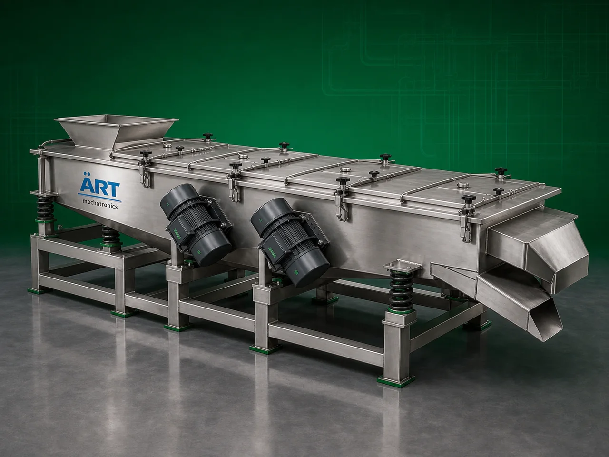

Screener Machine (Industrial Material Screening, Grading & Separation System)
A Screener Machine, also known as an Industrial Screening Machine, Vibratory Screener, or Material Screening System, is a highly efficient industrial equipment designed for screening, grading, classifying, filtering, and separating powders, granules, particles, grains, and bulk materials based on…

About the Screener Machine
The machine uses: ✔ Vibratory motion ✔ Rotational screening ✔ Mesh separation technology ✔ Particle classification systems
to separate:
Fine particles
Oversized materials
Dust and impurities
Agglomerates
Foreign particles
Screener machines are widely used in industries such as:
Food processing
Pharmaceuticals
Chemicals
Agro products
Grain processing
Spices
Minerals
Recycling industries
Construction materials
where accurate material classification, impurity removal, and high-capacity screening are essential.
The machine is suitable for: ✔ Powder screening ✔ Granule grading ✔ Grain classification ✔ Flour screening ✔ Chemical powder separation ✔ Industrial material sorting
ART Mechatronics offers high-performance screener machines, engineered for high screening efficiency, continuous operation, hygienic processing, and reliable industrial performance.
Working Principle of Screener Machine
Powders, granules, grains, particles, or bulk materials are fed onto screening surface
Vibratory or rotational motion spreads material across screen mesh Material moves continuously over screening surface
Enables efficient particle separation and grading
Smaller particles pass through mesh openings Oversized particles remain above mesh
Multiple decks allow simultaneous classification into different particle sizes
Dust Foreign particles Agglomerates Oversized impurities are separated effectively
Different material grades discharged through separate outlets
Types of Screener Machines
- 1. Vibratory Screener Machine
Uses: ✔ Vibro motor-based screening technology for powders, granules, and fine particles.
- 2. Rotary Screener Machine
Uses rotating screening mechanism for: ✔ Continuous bulk material processing
- 3. Multi Deck Screener Machine
Allows: ✔ Multi-size particle grading ✔ Simultaneous classification
- 4. Drum Screener Machine
Uses rotating drum for: ✔ Large-capacity industrial screening applications
- 5. Industrial Powder Screener
Heavy-duty system designed for: ✔ Fine powder separation and grading
- 6. Liquid Screener & Filter Machine
Suitable for: ✔ Slurry filtration ✔ Wet material screening
Industries Using Screener Machine
🍃 Food Processing Industry Flour, spice and powder screening 💊 Pharmaceutical Industry Granule and tablet powder classification ⚗️ Chemical Industry Chemical powder separation 🌾 Grain Processing Industry Grain and seed grading 🌶️ Spice Industry Masala impurity removal and grading ⛏️ Mineral Industry Mineral particle classification 🏗️ Construction Material Industry Sand and powder screening ♻️ Recycling Industry Waste material classification and separation
Features & Advantages
✔ High screening and grading efficiency ✔ Accurate particle size classification ✔ Continuous industrial operation ✔ Multi-deck screening capability ✔ Dust and impurity removal ✔ Low maintenance requirement ✔ Energy-efficient operation ✔ Hygienic and easy-to-clean construction ✔ Suitable for dry and wet material processing
Technical Highlights
Screening Type: Vibratory screening Rotary screening Drum screening Deck Options: Single deck Double deck Multi deck Construction: Stainless Steel / Mild Steel Mesh Size: Customizable Motor Type: Vibro motor / rotary drive Operation: Manual Semi-automatic Fully automatic
Turnkey Screening Solutions
ART Mechatronics offers: Complete industrial screening systems Multi-stage grading solutions Dust collection integration Conveying and handling systems Installation & commissioning After-sales service & AMC
Why Choose Art Mechatronics
Expertise in industrial screening and grading systems Customized solutions for multiple industries High-performance and durable machine construction Energy-efficient and hygienic designs Proven industrial performance across sectors
Applications
Food Processing Plants Pharmaceutical Manufacturing Units Chemical Processing Industries Grain & Seed Processing Units Spice Manufacturing Facilities Mineral Processing Plants
Related Cleaning, Sorting & Grading machines
Get pricing & specs for the Screener Machine
Share the product, target capacity, current process and plant location. These details help our engineers discuss the right machine or line configuration.
One partner, from design to start-up
ART Mechatronics designs, manufactures, installs and commissions your Screener Machine solution with regional presence in India, UAE and Thailand.